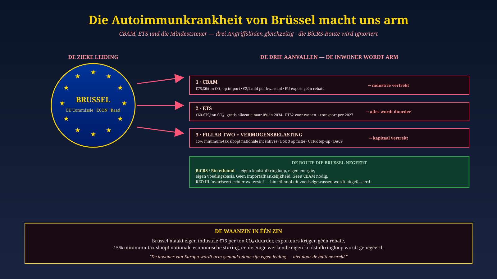

Malta · Lead Brüssel · 19. Juni 2026
Die Anti-Immunkrankheit Brüssels macht uns arm
CBAM, ETS und Pillar Two — drei Angriffe gleichzeitig. Die BiCRS/Ethanol-Route wird ignoriert.
Seit 1. Januar 2026: €75 pro Tonne CO₂ auf europäische Industrie. €2,1 Mrd. pro Quartal. Exporteure erhalten keine Erstattung. 15% Mindeststeuer zerschlägt nationale Industriepolitik. Und der einzige funktionierende eigene Kohlenstoffkreislauf — BiCRS / Bio-Ethanol — wird zugunsten von importiertem Wasserstoff ignoriert. Drei Angriffe, eine Führung, ein verarmender Einwohner.
Lesen Sie die Brüsseler Diagnose →